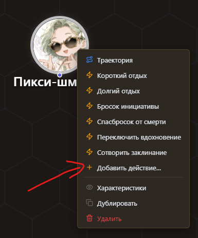
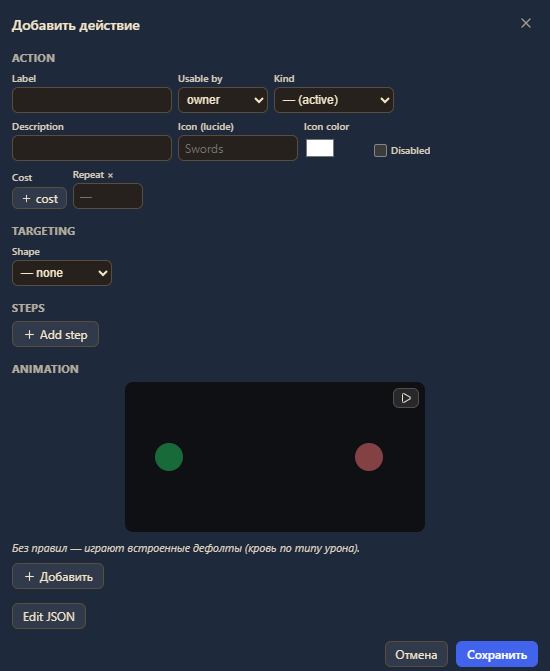
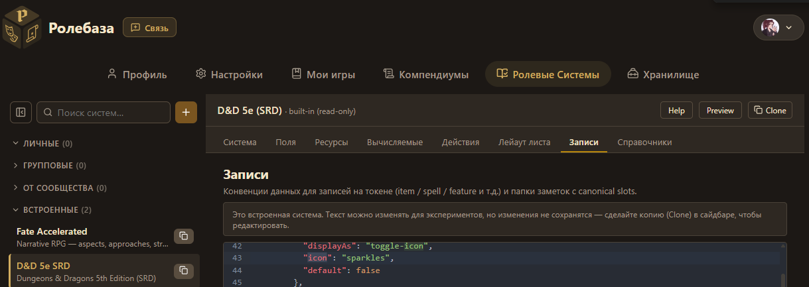
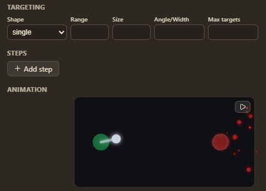
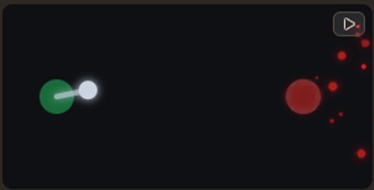
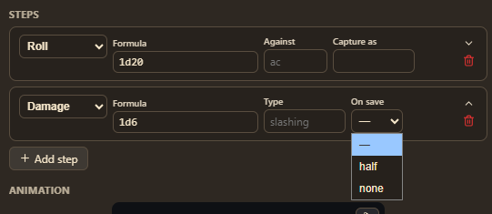
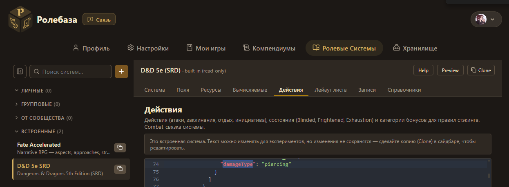
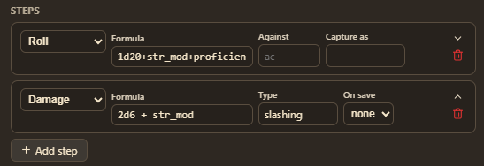
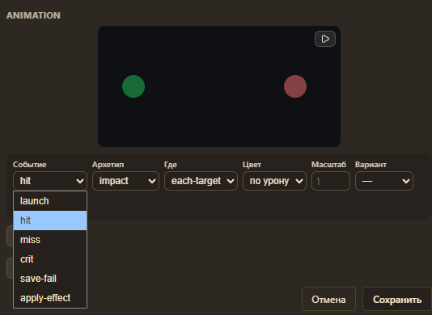

Добавление действий для токенов
Чтобы добавить действие для токена на Ролебазе необходимо выбрать свой токен и нажать Правый Клик Мыши (ПКМ).

При помощи кнопки "+ Добавить действие" можно внести разные фичи.
Дальше поговорю о полях и вариантах их заполнения.

Поле Label это то, как ваше действие будет называться у токена. Например: "Удар длинным мечом", заклинание "Ложная жизнь" и пр. Название может быть каким угодно.
Поле Kind определяет то, за что совершается действие: основное, бонусное, реакция, ... По умолчанию там основное (active) действие.
К сожалению, мне не удалось найти полного списка возможных иконок для Icon, поэтому я пропущу этот пункт. То же самое касается пункта Cost, у меня он не работает. Могу только сказать, что большинство актуальных иконок можно выцепить в Ролевых Системах.

Поле Shape определяет траекторию урона: single(одна цель), cone(конус), circle(окружность), line(линия), square(квадрат).
После выбора формы урона появляются дополнительные опциональные поля:

Range — Дистанция в клетках (или метрах в зависимости от distanceMethod[по умолчанию в метрах]); к сожалению, нельзя указывать несколько, на данный момент для дальнобойного оружия надо будет заводить два действия либо адаптироваться самим. Size — Радиус/длина/сторона для cone/circle/line/square. Angle — Угол конуса (для shape: cone), в градусах. Width — ширина. Max targets — Сколько целей затрагивается. 1 для single, N для area.

При смене формы и пр., что может менять анимацию, — она проигрывается повторно. Анимацию действия можно повторять кнопкой справа сверху.

Секция Steps(Шаги) отвечает за последовательность событий, которые происходят от конкретного действия.
Вот список всех возможных шагов:
Roll — Бросок, результат можно поймать в captureAs. Save — Спасбросок цели против DC. Capture'ит boolean успеха — проще говоря, факт того был пройден спасбросок ли провален. Damage — Урон с типом (damageType). Возможные damageType определяются Ролевой Системой во вкладке действия.

Modify field с Изменить поле цели (set/add/mul/clamp/min/max). У этого поля есть подполе с выбором цели, где можно указать себя или всех. Consume — Потратить ресурс (слот заклинания, charges, hit dice). Прерывает действие при недостатке. Слоты следует указывать в формате spell_slot_1 для ячейки первого уровня и т.п. Restore — Восстановить ресурс. Поддерживает restoreAllOf: 'long-rest' для групп. Учитывая, что для изменения полей есть Modify field, а для отдыха отдельные кнопки — это специфичная графа для заклинаний, работающих как отдых со своими особенностями: один раз, каждый боевой раунд и т.п. Effect — Наложить состояние. Все возможные варианты можно увидеть у себя в Ролевые Системы во вкладке Справочники. Там должны быть перечислены все доступные blinded, charmed, ... Chat — Отправить нарративный текст в чат. Branch — условный оператор, где первый true побеждает. То самое место, куда вставляется captureAs из Roll, Save, ... и прописываются события для успеха. Как только в перечне появляется первый успех эта графа считается отработанной. Т.е., если у вас несколько значений не взаимоисключающих — стоит заводить несколько branch. Prompt — Запросить выбор у игрока (slot level, advantage). Pre-flight — собирается до выполнения шагов. К сожалению, я не нашла достаточной документации, чтобы гибко настраивать заклы под юзание разных ячеек и т.п. Но просто знайте, что как минимум в теории это возможно. Сapability — Вызвать зарегистрированную capability (combat-tracker, async UI). Только для случаев, не выразимых declarative. Еще более непонятная для меня вещь, в которой у меня не работают args, поэтому не смогла с ней как следует познакомиться.

Вот так ↑ будет выглядеть обычная атака мечом, которым персонаж владеет, где у мастера будет запрошен КЗ противника, по которому игрок проводит атаку.
Дальше идет самый веселый блок — Анимация

Для каждого действия можно настроить анимации для разных событий. Варианты доступных событий: прицел/выбор, атака, промах, крит, провал спасброска, накладывание состояния.
Поле Архетип определяет форму анимаций, имейте в виду, что внешний вид анимации определяет в т.ч. и цель. То есть если выбрать архетип aoe-circle, то анимация окружности будет, только если в поле Где выбрана area, иначе никакой анимации не будет. Некоторые анимации с неподходящей областью отобразятся, но не верно, например, tether, если его направить на target, будет как пулевая очередь, но если выбрать area и пр., то он точка с пульсацией.
Где определяет место, куда должна быть направлена анимация.
Цвет это цвет анимации, по умолчанию он берется из выбранного ранее типа урона, но можно выбрать самостоятельно по цветовой палетке.
Вариант позволяет добавить свечение или наоборот уменьшить анимацию.
Примечания
Обращайте внимание, что хоть я и разделила на блоки, но сами по себе они взаимосвязаны, то есть если в самом начале не выбрать тип конус (например), а потом в конце настроить анимацию конуса, то анимация будет идти от врага, так как по умолчанию считается, что цель это выбранная точка/противник.
Но, к счастью, анимация хорошо показывает возможные косяки, так что главное следите за модификаторами в формулах, чтобы можно было максимально наслаждаться игрой и кастовать и в сладость и в гадость ♥